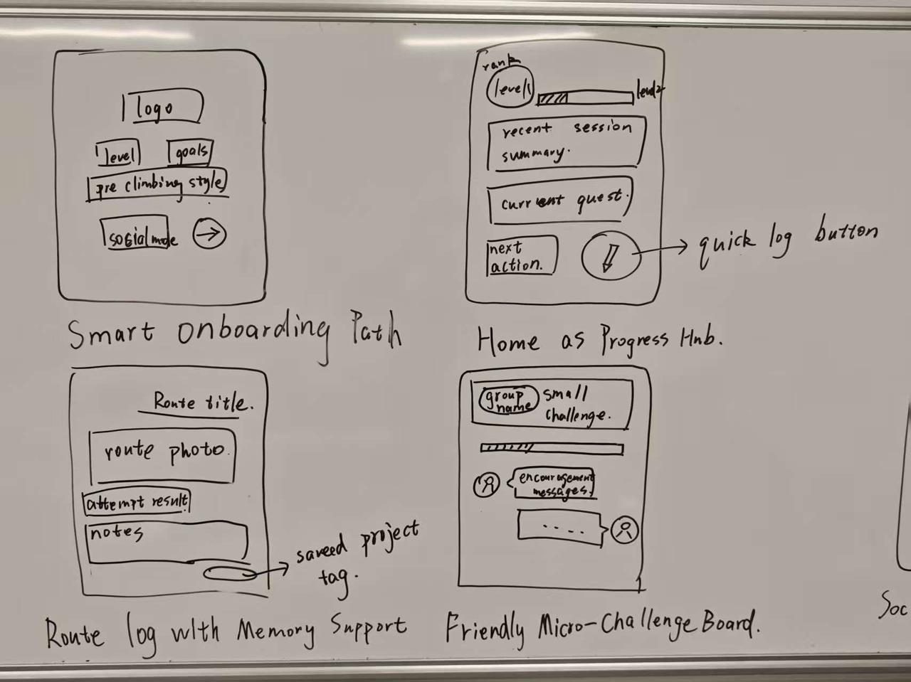
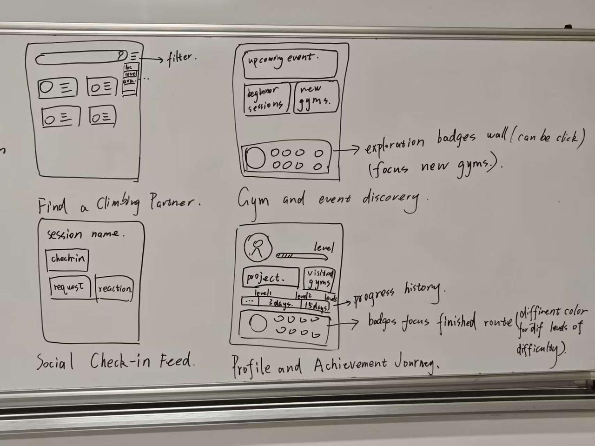

Biaolong Xie
Research synthesis, product framing, and content polishing.
Rockbond is a playful climbing journey ecosystem that connects personal progress tracking, session memory, and low-pressure social motivation into one continuous climbing experience.
Each member contributed to a different layer of the project, from research and UX analysis to web implementation, visual identity, and evaluation documentation.
Research synthesis, product framing, and content polishing.

Web implementation, page structure, and interface refinement.

Persona development, journey mapping, and feature planning.

Visual identity, poster support, and user testing documentation.
Developed under the Active Lifestyles / Go Climbers track, Rockbond focuses on beginner-to-intermediate climbers whose climbing experience is often split across memory, generic apps, and in-person coordination.
Climbing is a strong human-centred design context because it combines physical activity, visible skill progression, social participation, and personal motivation. The current experience is often split across memory, generic apps, and in-person coordination.
The main users are student climbers, beginners, and socially motivated climbers. They struggle to see progress, remember routes, find partners or events, and stay motivated between sessions.
Rockbond helps users log sessions, remember saved projects, view progress, discover gyms or events, and connect through lightweight community features.
The design responds to different needs: beginners need confidence and accessible entry points, while regular climbers need continuity, momentum, and climbing-specific tracking.
Progress quests, climb circles, and discovery badges make climbing more engaging while keeping the experience supportive, low-pressure, and suitable for everyday users.
Our research connects the Active Lifestyles / Go Climbers track with motivation, self-efficacy, social participation, and the gap between current climbing tools and everyday student climbers' needs.
We selected the Active Lifestyles / Go Climbers track because climbing is more than a physical activity. For student users, it sits between fitness, leisure, personal progression, and social participation.
Climbing already contains challenge, exploration, mastery, and peer recognition, making it a strong fit for playful mobile interaction. At the same time, current experiences are fragmented across memory, disconnected tools, and in-person coordination.
Our design opportunity asks how Rockbond can make progress more visible, support motivation between sessions, and strengthen social connectedness for beginner-to-intermediate student climbers.
This research question is developed further in the ideation stage, where the opportunity is translated into alternative concepts and selected features.
The literature shows that climbing participation is linked to motivation, leisure satisfaction, and physical self-efficacy. Digital support should therefore help users feel that participation is worthwhile, not just record isolated sessions.
Fitness-app research also suggests that social features and gamification can increase engagement, but comparison-based systems need careful framing so they remain supportive rather than discouraging.
Climbing-specific apps such as KAYA and Vertical-Life are useful for logging, discovery, and climbing content. ClimbTime supports local gym coordination, while Strava is strong in challenges and social visibility.
However, these products rarely combine lightweight student-friendly progress tracking, climbing-native social connection, and playful motivation in one coherent mobile-first experience.
The academic and commercial review point to the same unmet need: climbers benefit from motivation, self-efficacy, social support, and meaningful progress visibility, but current tools often separate these needs.
Rockbond addresses this gap by focusing on gradual progression, social belonging, and playful motivation for everyday beginner-to-intermediate climbers rather than elite performance alone.
Rockbond is shaped around primary users who directly participate in climbing and secondary stakeholders who support learning, gym access, events, and community culture.
The stakeholder groups are divided into primary users who directly participate in climbing and secondary stakeholders who shape or support the climbing experience through learning, gym access, events, and community culture.
The primary stakeholders are student climbers, beginner climbers, and socially motivated climbers who need support with participation, improvement, and staying engaged with the climbing community.
These users benefit from a mobile-first system because they need low-friction access to information, lightweight progress tracking, and easy coordination with other climbers.
Secondary stakeholders include coaches, climbing gym staff, event organisers, and experienced climbers who shape route access, learning opportunities, newcomer onboarding, and community culture.
They are not the main users of the first prototype, but they can contribute content, organise activities, and help sustain the platform's social value.
"I want to feel that I'm getting better, even when I'm still not climbing very hard routes."

Linh started indoor bouldering recently after seeing friends post about it online. She enjoys climbing, but still feels uncertain about technique, gym etiquette, and how to judge whether she is improving.
"I want one place where I can track my climbing, stay psyched, and connect with people to climb with."

Ethan enjoys pushing to harder grades, but he is equally motivated by climbing with others, sharing beta, and discovering new sessions or events. He already uses general fitness and social apps, but none of them fully fit climbing.
The research process combined literature review, commercial product review, questionnaire design, and ethical planning to support personas, journey mapping, requirements, and later design decisions.
We used academic literature review, commercial product review, and questionnaire design for initial requirement validation. This sequence gave us an evidence base for motivation, stakeholders, personas, journey mapping, and requirements.
The logic chain was: research evidence -> preliminary insights -> personas -> journey map -> requirements. Literature helped identify themes around motivation, confidence, participation, and social support, while commercial review showed how existing products handle logging, community, and playful engagement.
Academic sources helped identify recurring themes around climbing motivation, self-efficacy, confidence, social support, and sustained participation.
Product review helped compare logging, route discovery, gym engagement, social visibility, and challenge-based features in current climbing and fitness apps.
The questionnaire was designed to test assumptions with student climbers and beginner-to-intermediate indoor climbers before finalising requirements.
Sample: 34 responses, including 24 university students, 6 recent graduates or young professionals, 2 gym staff, and 2 other participants.
Experience: 10 beginners, 9 occasional climbers, 11 regular climbers, and 4 experienced climbers. The main context was indoor bouldering.
The findings suggest that an effective climbing community app should prioritise clarity, continuity, and social accessibility over feature quantity.
Before conducting questionnaires, user discussions, and later usability testing, participants were informed about the purpose of the study, what participation involved, and how their responses would be used in the CPT208 portfolio and design process.
We used the course-provided Participant Information Sheet and Informed Consent Form as the basis for consent, and the module-level ethics approval letter confirmed that CPT208 research activities involving participants, survey respondents, or personal data had ethics approval.
To protect privacy, we avoided unnecessary sensitive or personally identifying information. Notes and feedback records were kept within private group files, participant names were removed or anonymised where appropriate, and no raw personal data was published.
The journey map connects research insights to later requirements by showing how motivation, progress visibility, and social connectedness change before, during, and between climbing sessions.
Scenario: A climber wants to keep improving, stay motivated, discover climbing opportunities, and feel connected to a climbing community.
B. Explanatory ParagraphThis journey map shows that the central problem is not limited to the climbing session itself. Instead, the experience breaks down across the transitions before, during, and between sessions. Users may enjoy climbing, yet still struggle to sustain participation because progress is hard to see, social opportunities are hard to discover, and motivation fades once the session ends. The most important themes revealed here are therefore motivation, progress visibility, and social connectedness. A successful system should not simply digitise logging; it should connect these moments into a more continuous experience.
C. Journey-to-Design LinkThe journey map directly informs the next-stage requirements. Pain points around fragmented planning suggest the need for partner-finding and event discovery. Pain points during and after climbing suggest the need for low-friction logging and clear progress summaries. Pain points between sessions suggest the need for playful motivational loops, such as milestones, streaks, or friendly challenges. Together, these opportunities create a strong bridge from journey analysis to concrete user, functional, and playful requirements.

We used rapid ideation to explore a wide range of climbing app directions, then narrowed them down using user pain points, supportive playfulness, social value, and mobile-first feasibility.
Lightweight quests help climbers notice progress across sessions and stay motivated after inconsistent weeks.
Small circles make it easier to coordinate climbs, share updates, and keep social energy alive between sessions.
Map-style rewards encourage users to discover beginner sessions, events, new gyms, and new climbing partners.
Quick saving of routes, photos, and notes helps each session connect to the next without heavy manual logging.
Low-pressure prompts and small-wins feedback reduce intimidation and help new climbers feel included.
Lightweight post-session sharing supports reflection and recognition without turning the app into a full social feed.
After brainstorming the initial idea themes and defining the selection logic, we translated the most promising directions into quick Crazy Eights sketches to explore possible screens, flows, and feature combinations.


After reviewing the six themes, we grouped them into three broader design alternatives and assessed which one offered the strongest balance of value, distinctiveness, and feasibility.
This concept prioritises social connection as the main entry point, helping users find partners, join sessions, and explore events before anything else.
It directly addresses fragmented community coordination and lowers the barrier for beginners, but risks becoming a simple coordination tool with weaker long-term value if users do not keep using the social features consistently.
This approach centres on personal logging, project tracking, performance review, and goal-based prompts or quests.
It matches a highly consistent user need and is easier to prototype, but it risks feeling too similar to existing tracking tools and can become an isolated experience without carefully integrated social value.
This concept combines session logging and personal improvement with small-group circles, event discovery, and partner-finding.
It is the most well-rounded and distinctive option because it supports progress, motivation, and social connection at the same time, although it requires careful scoping to avoid interface complexity.
The chosen design follows a hybrid model that combines personal progress tracking with low-pressure community motivation. This decision is grounded in our research findings, which show that users want to improve consistently, stay motivated between sessions, and maintain social connection without being pushed into competitive or high-pressure environments.
Compared to the alternatives, the hybrid approach offers a more balanced and sustainable experience. A purely social-first system risks becoming a coordination tool with limited long-term engagement, while a progress-first system may feel isolated and lack social reinforcement. The hybrid model addresses both limitations by integrating quick session logging, progress feedback, Climb Circles, and exploration-based discovery into one unified flow.
The concept is built around three core layers: Guided Progress Quests, Climb Circles, and Exploration-Based Discovery. Together they turn isolated sessions into a connected climbing experience.
Turns personal climbing goals into small, achievable milestones so each session feels like part of a meaningful progression loop.
Lets users create or join small friend groups for short, motivating challenges without the pressure of public competition.
Rewards exploration behaviours so playfulness is tied to participation, discovery, and community involvement instead of only performance.
Open the low-fi and high-fi prototypes to see how the concept moves from structure to a more polished interaction flow.
The final concept was evaluated against the user requirements, journey-map pain points, and the team's feasibility constraints for a mobile-first prototype.
Makes climbing improvement easier to see by breaking long-term goals into specific session-to-session milestones.
Builds accountability and encouragement through small-group challenges that feel friendly rather than competitive.
Encourages users to explore events, spaces, and people in the climbing community instead of staying in a narrow routine.
The journey map directly informed the final requirements. Pain points around fragmented planning suggested the need for partner-finding and event discovery. Pain points during and after climbing suggested the need for low-friction logging and clear progress summaries. Pain points between sessions suggested the need for playful motivational loops, such as milestones, streaks, or friendly challenges. Together, these opportunities create a strong bridge from journey analysis to concrete user, functional, and playful requirements.
[1] S. Y. Lee, S. M. Kim, R. S. Lee, and I. R. Park, "Effect of participation motivation in sports climbing on leisure satisfaction and physical self-efficacy," Behavioral Sciences, vol. 14, no. 1, p. 76, 2024.
[2] A. Mazeas, M. Duclos, B. Pereira, and A. Chalabaev, "Evaluating the effectiveness of gamification on physical activity: A systematic review and meta-analysis," JMIR Serious Games, vol. 10, no. 1, 2022.
[3] D. Wigfield et al., "A cross-sectional, survey-based study of equity, diversity, and inclusion in the Canadian indoor climbing community," Journal of Exercise and Sport Sciences, 2024.
[AI-1] ChatGPT, GPT-5.4 Thinking, accessed on 2026-04-15, available at https://chatgpt.com. Used to visualize persona and journey maps.